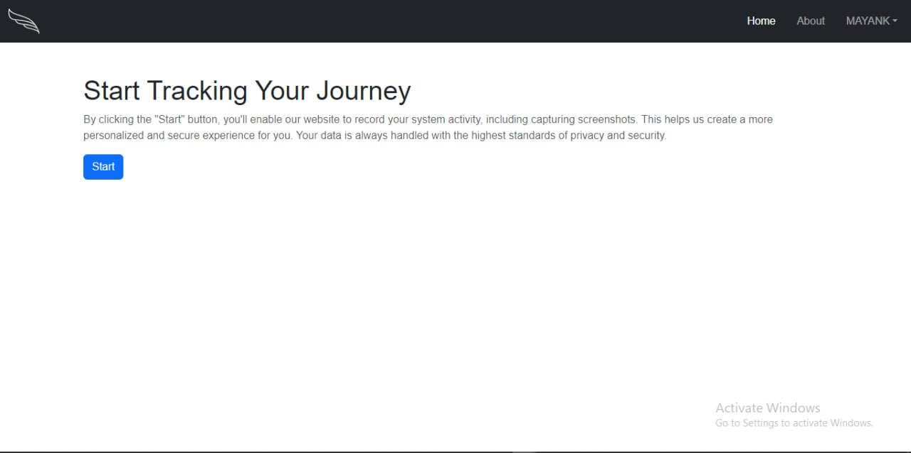

Activity Tracking App is a sophisticated platform
designed to monitor the applications you use and capture screenshots of
your screen while operating seamlessly in the background.
User Authentication: Secure user login and
registration using JSON Web Tokens (JWT) for authentication, ensuring
that user data and sessions are protected.
Activity Tracking: Monitors which applications are
opened and records activity data.
Screenshot Capture: Takes periodic screenshots of
the user’s screen to track activity visually.
Data Retrieval: Provides options to retrieve
collected activity data through a dedicated “Get Data” button.
Session Management: Includes functionality to start
and stop tracking sessions as needed.
MongoDB Integration: Utilizes MongoDB for storing
user data, activity logs, and screenshots, offering scalable and
flexible data management.
Pages Overview
Page 1: Intro
This is the introductory page of our website. It features a small
motto that encapsulates the essence of our service.
Page 2: Authentication
From the introduction page, you will be redirected to the
authentication page. You need to log in to access the main functionality
of the website. 
Page 3: Main Page
Page-3
On the main page, you will find:
A Start button to begin tracking activity and
taking screenshots.
A Get Data button to retrieve the collected
activity data.
A Stop button to halt the tracking session.
Page-3(1)
Technologies Used
HTML: For structuring the content of the
website.
CSS: For styling the website and enhancing its
appearance.
JavaScript: For adding interactivity to the web
pages.
Django: For the backend framework to handle
server-side logic.
Python: For writing server-side scripts and
handling background processes.
MongoDB: For storing user data, activity logs, and
screenshots, providing scalable data management.